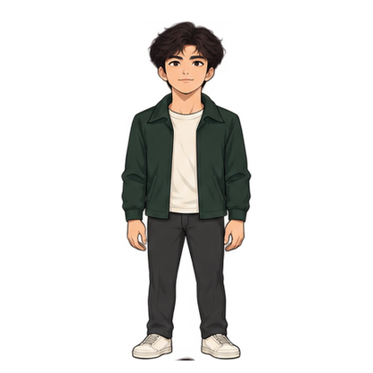

HELLO, I'M CHESTER
国际经济与贸易专业，想从事外贸业务与海外销售。我的简历、项目和工具，都放在这里。

从四个入口认识我
福建商学院 · 国际经济与贸易 · 预计 2027 年毕业
SKILLS
大学英语六级。口语可用于工作沟通（自评），项目中附有商务邮件练习稿。
用于外贸相关数据整理与分析。
用于项目介绍与汇报，整理课程的操作流程和参与内容。
在世格平台参与中国结出口模拟，做过客户开发、邮件、报价谈判、合同、报关、单证和成本核算。